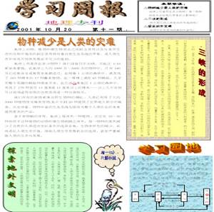
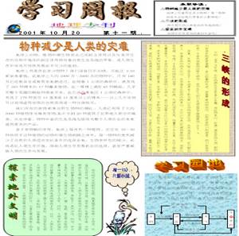

请选择完成下面其中的一个任务：
1.任务1：告别学习了6年的小学，进入中学这样一个新的学习环境，同学们对新的校园、新的班集体、新的老师有了初步了解，并慢慢融入其中......你的心目中新学校是怎么样的呢？请制作一份介绍新学校的板报，包含学校历史、校园文化、校园环境、所在班集体等栏目

2.任务2：为调动同学们的学习积极性，提高运用文字软件的能力与技巧，班级举办了一个制作“学习周报”的评比活动。要求每位同学制作一份学习周报，内容从所学学科中选取，然后在全班展示、评比。

1.任务1：告别学习了6年的小学，进入中学这样一个新的学习环境，同学们对新的校园、新的班集体、新的老师有了初步了解，并慢慢融入其中......你的心目中新学校是怎么样的呢？请制作一份介绍新学校的板报，包含学校历史、校园文化、校园环境、所在班集体等栏目
2.任务2：为调动同学们的学习积极性，提高运用文字软件的能力与技巧，班级举办了一个制作“学习周报”的评比活动。要求每位同学制作一份学习周报，内容从所学学科中选取，然后在全班展示、评比。
